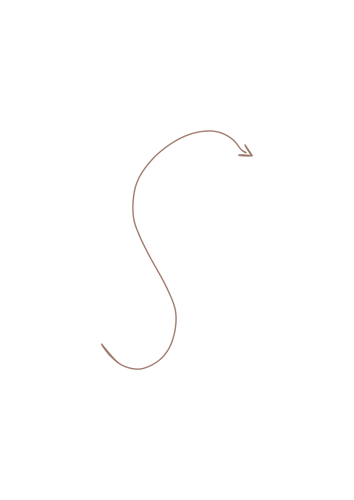

tap the gramophone needle
Among all the beautiful
songs you hear
Your voice is the most beautiful
melody I love the most.
i hope that sweet melody never fades
playing on for as long as time allows.

tap the gramophone needle
Your voice is the most beautiful
melody I love the most.
i hope that sweet melody never fades
playing on for as long as time allows.